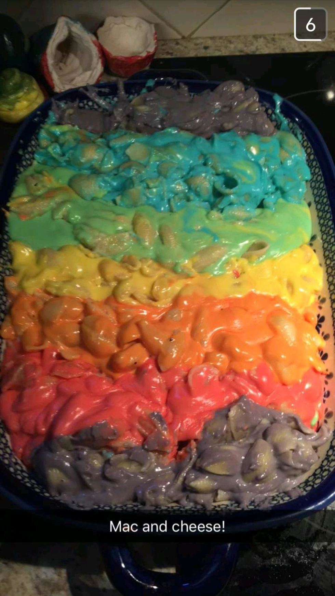

Cheesy Unicorn

DESCRIPTION:
You come home from a long day's work only to find your pavement has been shat
on by a fleet of unicorn, so much so that you can't make it to the front door.
so much so that the last bit of your energy escapes your body as you lay eyes
on the pile, the pile you crumple on in your exhaustion. the last thing you hear
being the huff / laugh of a snorting piece of shit unicorn. HAS THIS EVER HAPPENED TO YOU?
well pretend this has, and you have a vendetta against these mythical beautiful
majestic creatures, for this will be the only way to stomach what you're about to read.
INGREDIENTS:
- number of unicorns equal to the number of colors in the picture,
i forget how many.
- cheese, like a lot.
- mackaroni
- water?
STEPS:
- slaughter said number of unicorns
- drip dry like a deer, tied up and stuff, you've seen movies. do it above glass pan
- add the water, to the pan not the unicorn
- add the macaROWNI
- oven, put it in there
- uhhh temperature and stuff idk, if you've figured out how to find unicorns you can figure the rest out
home